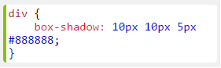
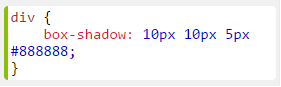
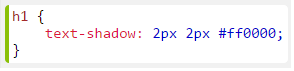
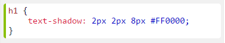

La propiedad box-shadow concede una o mas sombras a la Caja dependiendo de donde se desee.
Cada valor va es una lista separada por comas de la posicion de las sombras que se requiere trabajar.
La propiedad box-shadow concede una o mas sombras a la Caja dependiendo de donde se desee.
Cada valor va es una lista separada por comas de la posicion de las sombras que se requiere trabajar.
box-shadow: none |h-shadow v-shadow blur spread color |inset |initial |inherit;
La primera posicion indica el valor de la horizontal-sombra. Los valores negativos son permitidos.
Si el valor es positivo ( + ), la sombra de desplaza para la derecha y si es negativo ( - ), se desplaza para la izquierda.
La segunda posicion indica el valor de la vertical-sombra. Los valores negativos son permitidos.
Si el valor es positivo ( + ), la sombra de desplaza para la abajo y si es negativo ( - ), se desplaza para la arriba.
La tercera posicion es opcional e indica el valor de difuminado de la sombra.
Entre mas grande sea el valor mas borrosa se va a ver las sombra. Con un valor 0 la sombra se muestra como un color solido.
La propiedad text-shadow concede una o mas sombras a un Texto dependiendo de donde se desee.
Cada valor va es una lista separada por comas de la posicion de las sombras que se requiere trabajar.
box-shadow: none |h-shadow v-shadow blur spread color |inset |initial |inherit;
Algunas propiedades CSS son animatable, lo que significa que se pueden utilizar en animaciones y transiciones.
Algunas propiedades CSS son animatable, lo que significa que se pueden utilizar en animaciones y transiciones.
1. Sombra Horizontal, si es negativo ( - ) las sombra se pondra del lado izquierdo del texto.
2. Sombra Vertical, si es negativo ( - ) las sombra se pondra del lado superior del texto y si es positivo ( + ) las sombra se pondra del lado inferior del texto.
3. Opacidad de la Sombra, Entre mas grande sea el valor mas borrosa se va a ver las sombra. Con un valor 0 la sombra se muestra como un color solido.
4. Color de la Sombra.
1. Sombra Horizontal, si es negativo ( - ) las sombra se pondra del lado izquierdo del texto.
2. Sombra Vertical, si es negativo ( - ) las sombra se pondra del lado superior del texto y si es positivo ( + ) las sombra se pondra del lado inferior del texto.
3. Opacidad de la Sombra, Entre mas grande sea el valor mas borrosa se va a ver las sombra. Con un valor 0 la sombra se muestra como un color solido.
4. Color de la Sombra.